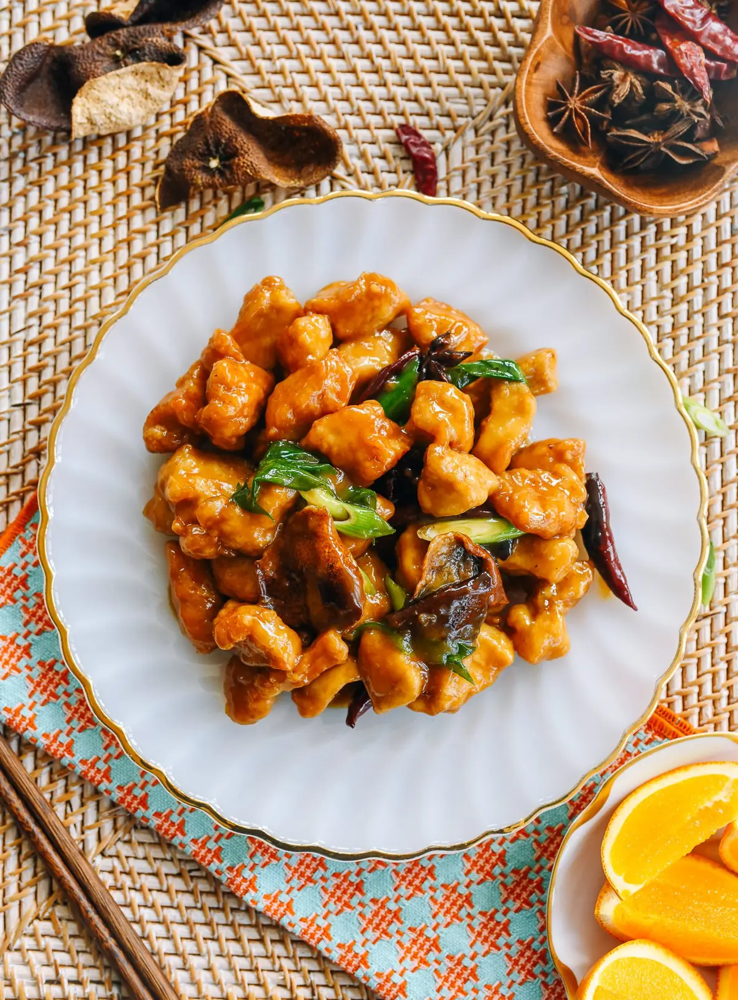

Orange Chicken
- Total time1 hr and 5 mins
- Serves4
- Ingredients22
- Steps9

Ingredients
For the chicken
- 1 pound boneless skinless chicken breast or thighs (cut into 1½-inch/4cm chunks)
- 1 tablespoon water
- 2 teaspoons Shaoxing wine
- 1/2 teaspoon salt
- 1/4 teaspoon garlic powder
- 1/4 teaspoon sesame oil
- 1/8 teaspoon white pepper
- 1/3 cup cornstarch
- 1 to 1½ cups neutral oil
For the rest of the dish
- 1/2 cup fresh orange juice
- 1/2 cup chicken stock
- 2 tablespoons sugar
- 2 1/2 tablespoons rice wine vinegar
- 1 tablespoon oyster sauce
- 1/4 teaspoon salt
- 3 to 4 pieces dried tangerine or mandarin orange peel (optional)
- 6 dried red chili peppers
- 2 star anise
- 1/2 teaspoon garlic (minced, optional)
- 1/2 teaspoon ginger (minced, optional)
- 2 tablespoons cornstarch (mixed into slurry with 2 tablespoons water)
- 1 scallion (sliced on an angle into 1 1/2-inch/4cm pieces)
Directions
- Add the chicken to a dish, and add the water, Shaoxing wine, salt, garlic powder, sesame oil, and white pepper. Toss to combine, and set aside for at least 20 minutes or covered and refrigerated overnight.
- Add the cornstarch to a shallow bowl, and dredge the chicken pieces until evenly coated.
- Mix the orange chicken sauce by combining the orange juice, chicken stock, sugar, rice vinegar, oyster sauce, and salt. Taste the sauce, and add more rice vinegar if you like it tart, more salt or oyster sauce if you think it needs more salt, and/or a little more sugar if you like it sweeter.
- Soak the dried tangerine peels, whole dried chili peppers, and star anise in a bowl filled with room temperature water for 2 minutes, and drain. This will help bring out their flavors later when they are toasted in the dry wok. Take care not to break open the chilis, or the seeds inside will make the dish very spicy!
- Heat 1 to 1½ cups of canola oil in a wok to 350°F/175°C. You will shallow-fry the chicken in two batches. Carefully place half of the chicken into the wok, and shallow fry until golden brown (about 3 to 4 minutes), turning the chicken halfway through for even cooking and browning. Transfer to a plate lined with paper towels or a wire rack set over a sheet pan, then repeat with the second batch.
- If you want the chicken extra crispy and you're using dark meat—after the chicken has rested for 5 to 10 minutes, reheat the oil and give the chicken a second fry for 1 to 2 minutes. This step is optional.
- Remove most of the oil from the wok, leaving behind about 1 tablespoon. Heat the wok over medium-low heat, and add the tangerine peel, chili peppers, and star anise. Toast for 30 seconds, until fragrant, taking care not to burn them.
- Add the chopped ginger and garlic at this time, if using. Cook for 10 seconds, and then add the prepared sauce mixture. Bring to a simmer.
- Stir up your cornstarch slurry, and gradually add it to the sauce, stirring constantly. When the sauce is thick enough to coat a spoon (you may not need all of the cornstarch slurry to get your desired thickness), add the chicken and scallions. Toss quickly, and serve!
Recipe credit: thewoksoflife.com